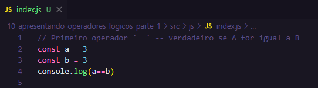
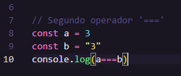
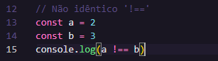
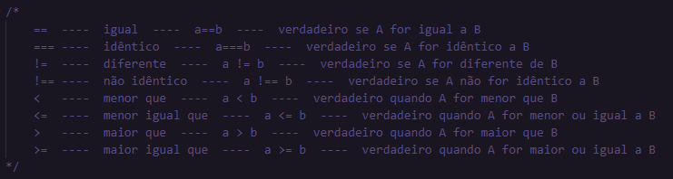

Esses operadores servem para validar dados ou verificar condições. Ou seja, se uma comparação entre dois dados está retornando um valor esperado dentro do fluxo do código vou orientar meu código a fazer uma coisa especifica, se não oriento a fazer outra. Essa comparação sempr vai retornar um tipo booleano, esse tipo vimos na outra aula, verdadeiro ou falso.
O primeiro operador é o '==' (Igual). Reforçando, quando é sinal de igual único '=', serve para atribuir valor e o duplo '==', serve para comparar valores.
Aqui o console imprime 'true' já que os dois são iguais. Se por acaso colocar um dos valores entre aspas (string - texto), duplas ou simples, mesmo assim imprimiria 'true' por causa da tipagem fraca do JS.

Agora, se colocar '===' (idêntico), (três sinais de igual) vai imprimir false, porque com 3 sinais de igual vai comparar não só o valor, mas também o tipo do dado. Nesse caso como a tipagem não é igual ele imprime false. Para esse operador tudo precisa ser idêntico.

Outro é o '!==' (não idêntico) que significa 'não identico' nesse vai comprar o valor e o tipo. Então ao contrário do anteiro esse vai dizer se os tipos, os valores são idênticos ou não.
No caso abixo vai ser impresso true porque é positivo que os valores são diferentes. Se caso os valores fossem iguais ai seria impreso false, já que o operador iria dizer que não os valores não são iguais e sim diferentes.
Outra forma é o '!=' (diferente) que não vai comparar a tipagem e sim o valor.

Outro é o '<' que indica se um valor é menor que outro. Verdadeiro quando A for menor que B. Também pode usar o '<=' que pergunta para o sistema se A é menor ou igual a B. Outra forma é '>=' maior ou igual.
